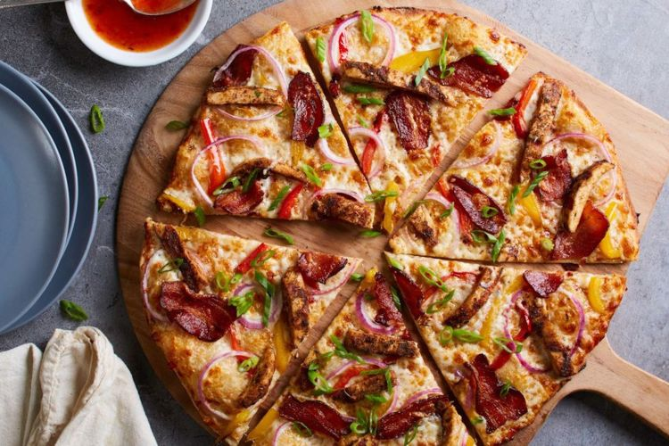

Spicy Barbecue Pizza

Description.
A topping of spicy barbeque sauce, diced chicken, Cheese, veggies. Chicken, beef and sausages, and baked to bubbly goodness!
Ingridents.
- 250 g flour
- 2 teaspoons yeast
- 1 tablespoon sugar 2tablespoon Olive oil
- 1 tablespoon white pepper
- 150 ml water
- 1 teaspoon oregano
- Spicy chicken and beef barbecue
- Cheese, veggies. Chicken, beef and sausages
Steps
- Proof yeast with lukewarm water and sugar for 10mins.
Afterwards add Olive oil, salt and flour and mix well. Proof for 1 hour 30mins, Meanwhile. Cut veggies-red and green bellpeppers, cherry tomato, onions.
- Grill marinated cubed chicken and beef. Allow to cool. Cut sausages and keep aside.
- Make or mix tomato sauce.
- After dough has doubled in size. Knock down and place in pizza pan then gently spread out. Prick surface with fork and brush edges with olive or spicy oil.
- Spread sauce and top with cheese and spicy barbecued chicken, beef and veggies. Spinkle some salt and allow to rest for 20mins. Then oven is preheated.
- Grill for 25mins.